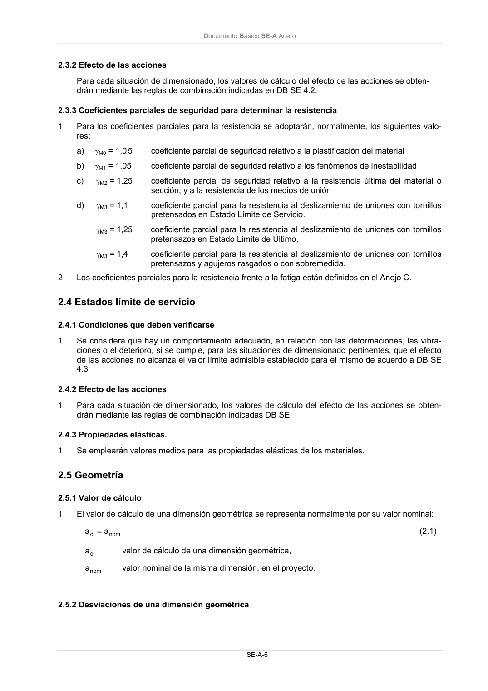
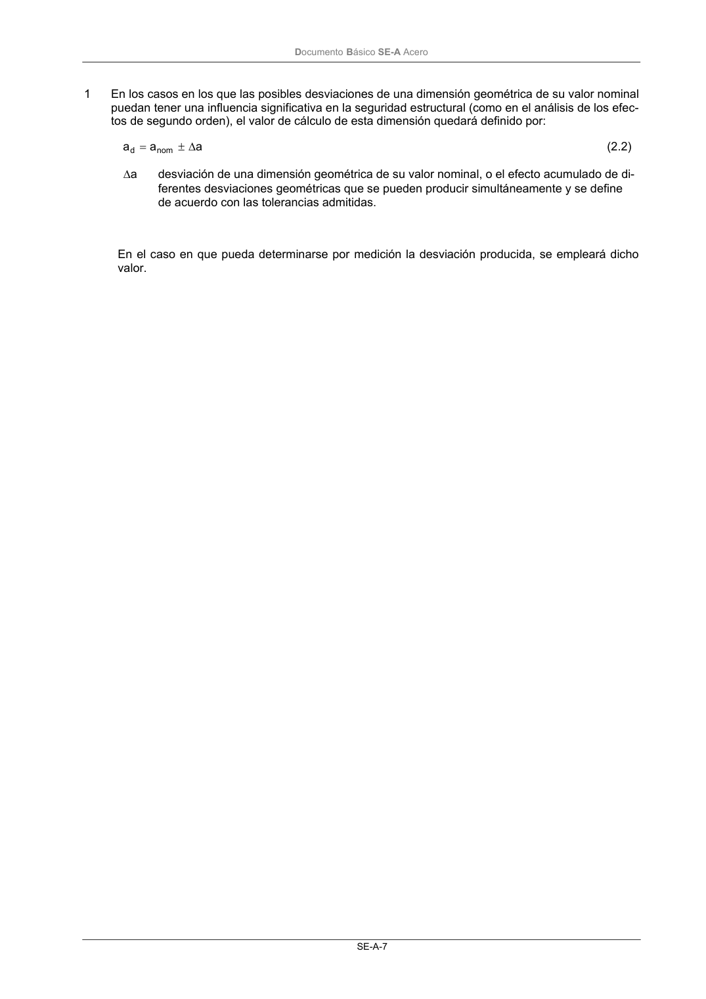

DB-SE-A · 2.5.2 Desviaciones de una dimensión geométrica · versión 2007-10-23 · capa oficial
Formatos: JSON compacto · Markdown · PDF fuente
Ámbito del documento · texto del ámbito · documento y tablas
ID técnico a0031 · PDF pág. 8-11 · jerarquía no validada por persona · contrastado con el literal de la página 8 (candidato tipográfico); no validado por persona · padre: raíz
2.5.2 Desviaciones de una dimensión geométrica DocumentoBásico SE-A Acero SE-A-7 1 En los casos en los que las posibles desviaciones de una dimensión geométrica de su valor nominal puedan tener una influencia significativa en la seguridad estructural (como en el análisis de los efec- tos de segundo orden), el valor de cálculo de esta dimensión quedará definido por: a a a nom d ∆ ± = (2.2) a ∆ desviación de una dimensión geométrica de su valor nominal, o el efecto acumulado de di- ferentes desviaciones geométricas que se pueden producir simultáneamente y se define de acuerdo con las tolerancias admitidas. En el caso en que pueda determinarse por medición la desviación producida, se empleará dicho valor. DocumentoBásico SE-A Acero SE-A-9


PDF fuente redistribuible: copia fiel enlazada en esta página (SHA256 verificado).